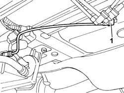
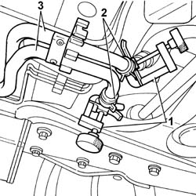
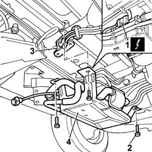

5020M10 INDEPENDENT HEATER UNIT - R R
- Path
- Procedures > 50 AUXILIARY UNITS > 5020 HEATER > 5020M SUPPLEMENTARY INDEPENDENT HEATER > 5020M10 INDEPENDENT HEATER UNIT - R R
- Kind
- repair procedure (removal / refitting; the operation number is the code)
- Applies to
- all engines; all production periods
- Interactive page
- https://sloeber94.github.io/elrnDB-fUlss/en/#/179007455
Applies to: all engines; all production periods
 Removing
Removing
 Refitting
RefittingOp. 5530B56 BATTERY DRIP TRAY COVER - R.R.
- Disconnect the negative battery terminal.
- Position the vehicle on a lift.
1. Disconnect the fuel pipe rapid connector.

Applies to: all engines; all production periods
1. Position the ordinary tools on the flexible pipes to the heater and the thermostat.
2. Open the fastening bands using the special tool and release them.
 | Description | Code | Function |
|---|---|---|---|
. | Caliper | 1.881.138.000 | Removing bands |
3. Disconnect the water pipes taking care to collect any fluid that comes out.

Applies to: all engines; all production periods
1. Disconnect the electrical connection.
2. Undo the retaining bolts.
3. Place the differential pressure sensor at the side.
4. Remove the additional independent heater.

Applies to: all engines; all production periods
Refitting
Removing- Position the additional independent heater.
- Position the differential pressure sensor.
- Tighten the bolts fixing the additional independent heater.
- Connect the electrical connection.
- Connect the pipes.
- Position the retaining bands using the special tool.
| Description | Code | Function |
|---|---|---|---|
. | Caliper | 1.881.138.000 | Removing bands |
- Connect the fuel pipe rapid connector.
- Remove the vehicle from the lift.
- Connect the negative battery terminal.
Topics linked from this page (2)
- 0010T21 ENGINE COOLANT - CHECK DENSITY AND CHANGE, IF NECESSARY
- 5530B56 BATTERY DRIP TRAY COVER - R.R.